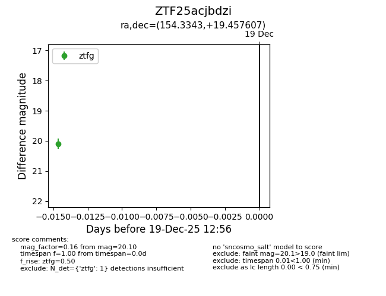
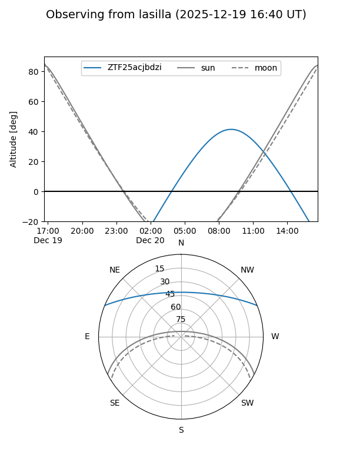
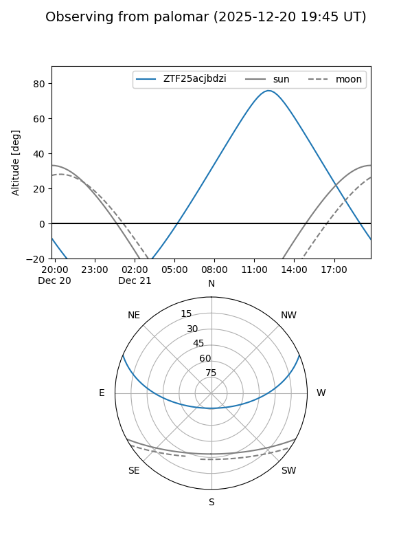

ZTF25acjbdzi
Target ZTF25acjbdzi at 2025-12-19 12:57
Aliases and brokers:
FINK: fink-portal.org/ZTF25acjbdzi
Lasair: lasair-ztf.lsst.ac.uk/objects/ZTF25acjbdzi
ALeRCE: alerce.online/object/ZTF25acjbdzi
alt names
ZTF25acjbdzi (ztf,fink_ztf)
Coordinates:
equatorial (ra, dec) = 154.3343,+19.45761
equatorial (HMS+DMS) = 10:17:20.24,+19:27:27.38
galactic (l, b) = (216.8181,+53.93950)
Flags:
Photometry:
last ztfg=20.10
1 ztfg detections
Lightcurve

Visibility


Additional plots